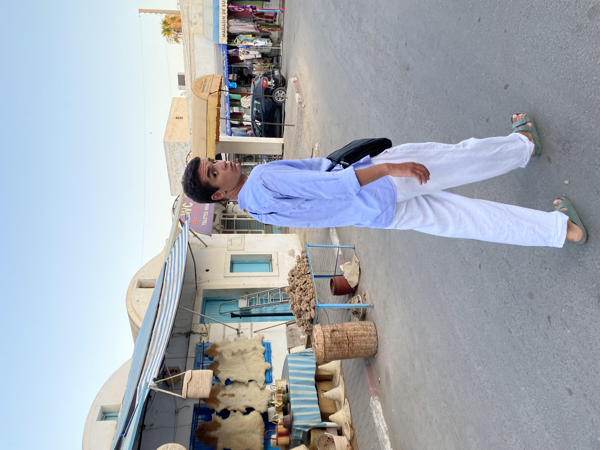

|  |
How is life in Djerba? Would you recommend this city?
Life in Djerba is not expensive at all, there is good weather, for lovers of oriental food there is what it takes, and for fun everything is there!
How is student life in Djerba?
Student life is fun! the beach is nearby and as far as restaurants, bars and cafes are concerned, there is no shortage of them!
How much does it cost to live in Djerba?
Not expensive at all!
Is it difficult to find accommodation in Djerba? Any advice to give?
A little yes, you have to look at airbnb.
How is the local food?
Too good! A spicy couscous or 'ojja'.
What places should you visit in Djerba?
Its museums, its beaches, its souk.
And for eating? Can you tell us your favorite places in Djerba?
At Hamdan, Houriya, the Palm!
How is the nightlife in Djerba? Where should we go?
You have to go to what they call the zone!
What advice can you give to students arriving soon in Djerba?
|